한국사능력검정시험-심화 (2010-05-08 기출문제)
1. 다음 유적과 유물을 만들었던 시대의 사회 모습으로 옳은 것은? [1점]
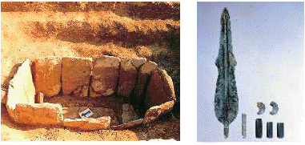
- 강가에서 막집을 짓고 살았다.
- 농사를 처음으로 짓기 시작하였다.
- 철제 무기와 농기구가 널리 사용되었다.
- 구릉 위에 취락을 이루고 방어 시설을 설치하였다.
- 유력한 족장을 왕으로 추대하여 연맹 왕국을 형성하였다.
(정답률: 48%)

2. 밑줄 그은‘그’가 건국한 나라와 관련된 설명으로 옳은 것을 <보기>에서 고른 것은? [2점]
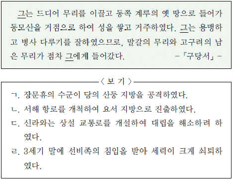
- ㄱ, ㄴ
- ㄱ, ㄷ
- ㄴ, ㄷ
- ㄴ, ㄹ
- ㄷ, ㄹ
(정답률: 65%)
3. 다음 자료와 관련 있는 초기 국가의 모습으로 옳은 것은? [1점]
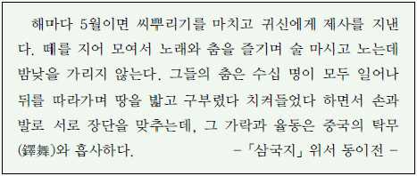
- 수렵 사회의 전통을 반영한 제천 행사를 거행하였다.
- 왕과 신하들이 국동대혈에 모여 함께 제사를 지냈다.
- 죽은 사람의 뼈를 추려 가족의 공동 목곽에 안치하였다.
- 천군이 소도에서 농경과 종교에 대한 의례를 주관하였다.
- 다른 부족의 생활권을 침범하면 노비와 우마로 배상하였다.
(정답률: 66%)
4. 다음 자료와 관련된 시기의 상황으로 적절한 것을 <보기>에서 고른 것은? [2점]
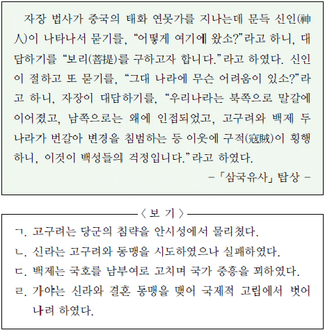
- ㄱ, ㄴ
- ㄱ, ㄷ
- ㄴ, ㄷ
- ㄴ, ㄹ
- ㄷ, ㄹ
(정답률: 28%)
5. 다음 유물들이 발견된 발해 고분에 대한 설명으로 옳지 않은 것은? [3점]
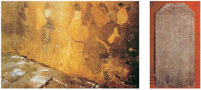
- 문왕의 딸인 정효 공주 묘이다.
- 중국 길림성 화룡현 용두산에 위치하고 있다.
- 힘찬 기상을 표현한 돌사자상이 출토되었다.
- 묘지명에‘황상(皇上)’이라는 용어가 사용되었다.
- 고구려 계통의 모줄임 천장 구조를 계승하고 있다.
(정답률: 29%)
6. 다음 글의 내용과 관련된 인물에 대한 설명으로 옳은 것을 <보기>에서 고른 것은? [2점]
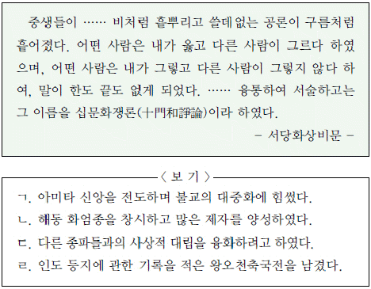
- ㄱ, ㄴ
- ㄱ, ㄷ
- ㄴ, ㄷ
- ㄴ, ㄹ
- ㄷ, ㄹ
(정답률: 50%)
7. 다음은 신라 역사를 세 시기로 구분한 것이다. 이에 대한 설명으로 옳지 않은 것은? [2점]
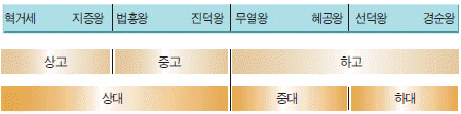
- 상고·중고·하고는 삼국사기의 시기 구분이다.
- 상고 시기에는 신라 고유의 왕 호칭을 사용하였다.
- 중고 시기에는 불교식 왕명을 사용하였다.
- 중대에는 태종 무열왕의 직계 후손들이 왕위에 올랐다.
- 하대에는 진골 귀족들의 왕위 쟁탈전이 전개되었다.
(정답률: 41%)
8. 다음 비문의 밑줄 그은‘태왕(太王)’과 관련된 설명으로 옳은 것은? [2점]
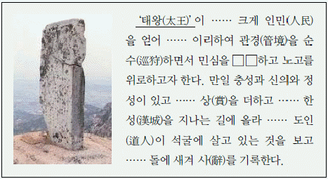
- 율령을 반포하여 통치 질서를 확립하였다.
- 화랑도를 국가적인 조직으로 개편하였다.
- 이사부를 보내 우산국(울릉도)을 복속시켰다.
- 만주 지방에 대한 대규모의 정복 사업을 단행하였다.
- 김흠돌의 모역 사건을 계기로 귀족 세력을 숙청하였다.
(정답률: 47%)
9. (가), (나)에 대한 설명으로 옳은 것을 <보기>에서 고른 것은? [2점]
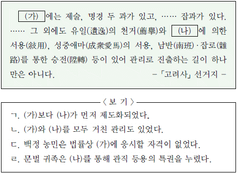
- ㄱ, ㄴ
- ㄱ, ㄷ
- ㄴ, ㄷ
- ㄴ, ㄹ
- ㄷ, ㄹ
(정답률: 47%)
10. 다음 사찰에 관한 설명으로 옳지 않은 것은? [2점]
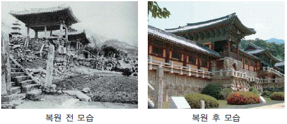
- 단아하면서도 균형 잡힌 쌍사자 석등이 있다.
- 목조 건물들이 임진왜란 때 불타기도 하였다.
- 석가탑 안에서 무구정광대다라니경이 발견되었다.
- 석굴암과 함께 유네스코의 세계 문화유산으로 등재되었다.
- 삼국유사에는 김대성이 현생의 부모를 위해 건립한 것으로 전한다.
(정답률: 42%)
11. (가)~(다)는 고려 시대 역사서의 내용이다. 이들 역사서를 옳게 배열한 것은?(순서대로 가, 나, 다) [3점]
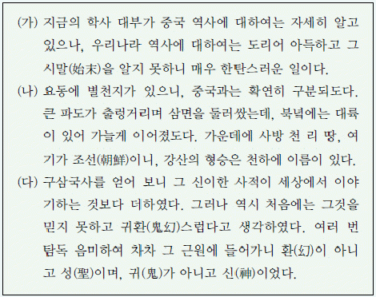
- 삼국사기, 제왕운기, 동명왕편
- 삼국사기, 동명왕편, 제왕운기
- 동명왕편, 삼국사기, 제왕운기
- 동명왕편, 제왕운기, 삼국사기
- 제왕운기, 삼국사기, 동명왕편
(정답률: 26%)
12. (가), (나)에 대한 설명으로 옳은 것을 보기에서 고른 것은? [2점]
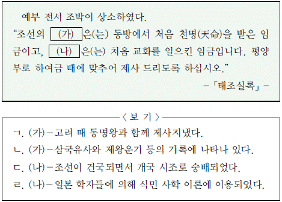
- ㄱ, ㄴ
- ㄱ, ㄷ
- ㄴ, ㄷ
- ㄴ, ㄹ
- ㄷ, ㄹ
(정답률: 23%)
13. 조선 초기에 건립된 목조 건축물을 보기에서 고른 것은? [2점]
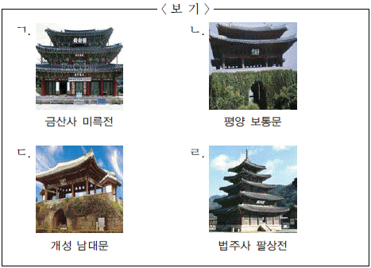
- ㄱ, ㄴ
- ㄱ, ㄷ
- ㄴ, ㄷ
- ㄴ, ㄹ
- ㄷ, ㄹ
(정답률: 38%)
14. 다음 자료의 기관에 대한 설명으로 옳지 않은 것은? [2점]
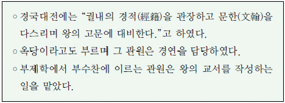
- 장관을 대제학이라 하였다.
- 외교 문서의 작성을 전담하는 관원이 있었다.
- 사간원, 사헌부와 함께 언론 3사라고도 하였다.
- 소속 관원은 청요직이라 하여 선망의 대상이었다.
- 세조 때 폐지된 집현전과 유사한 업무를 담당하였다.
(정답률: 36%)
15. 다음 자료를 통해 추론한 내용으로 적절하지 않은 것은? [2점]
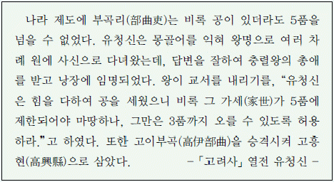
- 신분에 따라 승진의 한계가 있었을 것이다.
- 몽골어를 잘하여 출세하는 이들도 있었을 것이다.
- 이 자료의 주인공은 고려의 자주성 회복에 힘썼을 것이다.
- 공로를 세우면 출신 부곡이 현으로 승격될 수 있었을 것이다.
- 부곡의 향리는 일반 군현의 향리에 비해 차별을 받았을 것이다.
(정답률: 48%)
16. 다음 설명에 해당하는 승탑[부도]을 <보기>에서 고른 것은? [2점]
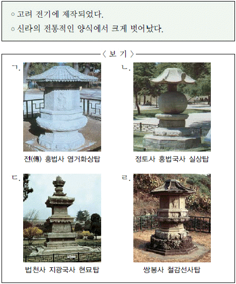
- ㄱ, ㄴ
- ㄱ, ㄷ
- ㄴ, ㄷ
- ㄴ, ㄹ
- ㄷ, ㄹ
(정답률: 37%)
17. 다음 자료의 밑줄 그은‘나’에 대한 설명으로 옳은 것은?[2점]
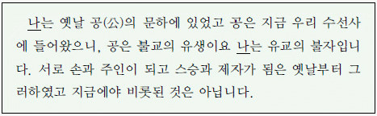
- 유교와 불교의 일치를 주장하였다.
- 권문세족과 긴밀한 관계를 맺고 있었다.
- 처음으로 수선사 결사 운동을 전개하였다.
- 교종의 입장에서 선종을 통합하려 하였다.
- 성균관의 부흥을 통해 성장한 신흥 유학자였다.
(정답률: 45%)
18. 다음 자료와 참전 신분이 가장 유사한 성격을 지닌 전투는? [1점]
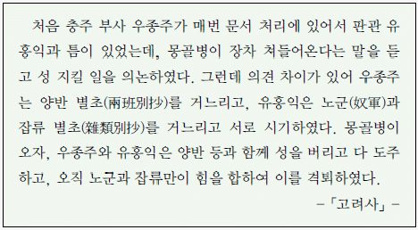
- 진포 전투
- 홍산 전투
- 안융진 전투
- 처인성 전투
- 관음포 전투
(정답률: 66%)
19. 다음 자료를 근거로 조선 초기의 가족 제도와 혼인 제도에 대하여 적절하게 추론한 것은? [1점]
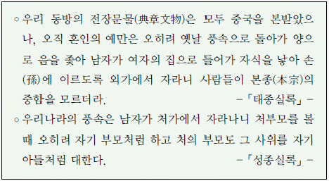
- 장자 중심의 상속 제도가 확립되었다.
- 부계 중심의 가족 제도가 더욱 강화되었다.
- 아들 없는 집안에서는 양자를 들이는 것이 일반화되었다.
- 같은 성을 가진 사람들끼리 혼인하는 동성혼이 이루어졌다.
- 고려 시대와 같이 서류부가의 풍속이 행하여졌다.
(정답률: 53%)
20. 다음 지도에 대한 설명으로 옳은 것만을＜보기>에서 모두 고른 것은? [2점]
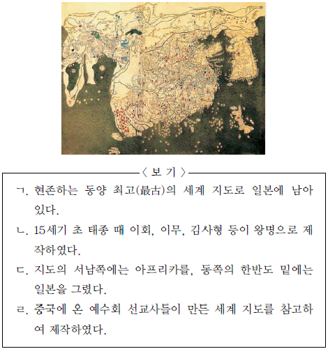
- ㄱ, ㄴ, ㄷ
- ㄱ, ㄴ, ㄹ
- ㄱ, ㄷ, ㄹ
- ㄴ, ㄷ, ㄹ
- ㄱ, ㄴ, ㄷ, ㄹ
(정답률: 35%)
21. 다음 사건이 일어났던 시대의 상황으로 옳지 않은 것은?[2점]
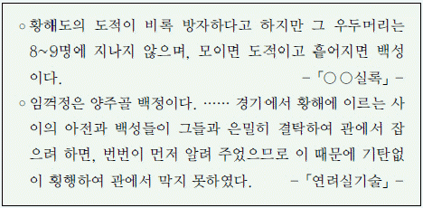
- 백운동 서원이 소수 서원으로 사액되었다.
- 방납의 폐단으로 농민의 부담이 늘어났다.
- 예송을 둘러싸고 서인과 남인이 대립하였다.
- 왕의 외척들의 권력 다툼으로 사화가 일어났다.
- 을묘왜변을 계기로 비변사가 상설 기구가 되었다.
(정답률: 26%)
22. 다음 자료의 밑줄 그은‘그’에 대한 설명으로 옳은 것만을 <보기>에서 모두 고른 것은? [3점]
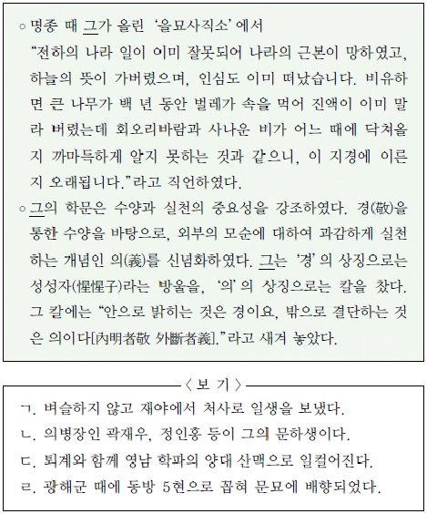
- ㄱ, ㄴ, ㄷ
- ㄱ, ㄴ, ㄹ
- ㄱ, ㄷ, ㄹ
- ㄴ, ㄷ, ㄹ
- ㄱ, ㄴ, ㄷ, ㄹ
(정답률: 22%)
23. 다음 자료에 해당하는 시기에 대한 설명으로 옳지 않은 것은? [2점]
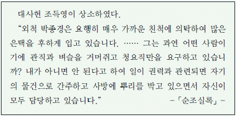
- 매관매직이 성행하였다.
- 삼정의 문란이 심해졌다.
- 국가 권력이 비변사로 집중되었다.
- 특정 유력 가문이 권력을 독점하였다.
- 붕당의 본거지인 서원이 대폭 정리되었다.
(정답률: 61%)
24. (가)~(라)에 대한 설명으로 옳지 않은 것은? [2점]
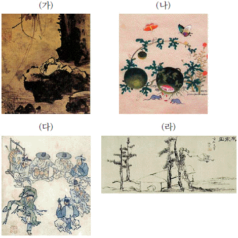
- (가)－강희안의 작품으로 사색에 잠긴 선비의 내면 세계를 표현하였다.
- (나)－신사임당의 작품으로 여성의 섬세한 필치가 돋보인다.
- (다)－김홍도의 작품으로 당시 생활 모습을 생동감 있게 표현하였다.
- (라)－김정희의 작품으로 진경 산수화의 화풍을 계승하였다.
- (가)－(나)－(다)－(라)의 순서대로 그려졌다.
(정답률: 35%)
25. 다음 교서를 내린 국왕이 시행한 정책으로 옳지 않은 것은? [2점]
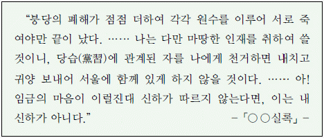
- 정치에서 소외되었던 시파를 대거 등용하였다.
- 탕평파를 육성하여 이들을 중심으로 정국을 운영하였다.
- 왕권을 강화하여 붕당 간의 세력 균형을 유지하려 하였다.
- 이조 전랑이 3사의 관리를 선발하던 관행을 없애고자 하였다.
- 노론과 소론을 조정하면서 일련의 군제·정치 개혁을 단행하였다.
(정답률: 24%)
26. 지도의 (가)~(다)에 대한 설명으로 옳은 것을 보기에서 고른 것은? [3점]
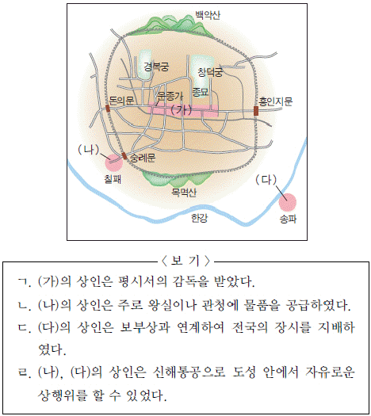
- ㄱ, ㄴ
- ㄱ, ㄹ
- ㄴ, ㄷ
- ㄴ, ㄹ
- ㄷ, ㄹ
(정답률: 20%)
27. 다음은 어느 신분의 불법 행위에 대한 처벌법 내용이다. 이 신분에 대한 설명으로 옳은 것을 <보기>에서 고른 것은? [2점]
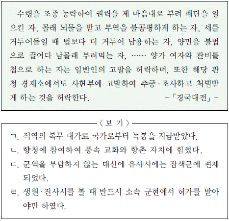
- ㄱ, ㄴ
- ㄱ, ㄷ
- ㄴ, ㄷ
- ㄴ, ㄹ
- ㄷ, ㄹ
(정답률: 18%)
28. 다음 기구들이 제작되었던 시기의 문화에 대한 설명으로 옳지 않은 것은? [1점]
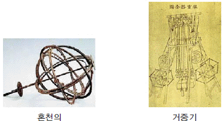
- 칠정산 내편과 외편이 완성되어 역법이 정비되었다.
- 홍역[마진]에 관한 치료법을 정리한 마과회통이 저술되었다.
- 청과의 통상과 상공업을 진흥시키자는 북학 사상이 나타났다.
- 국어학에 대한 관심이 높아져 훈민정음운해 등이 출간되었다.
- 지전설을 수용하여 중국 중심주의에서 벗어나려는 움직임이 있었다.
(정답률: 37%)
29. 다음과 같은 상황이 나타났던 시기의 사회 모습으로 적절한 것만을 <보기>에서 모두 고른 것은? [3점]
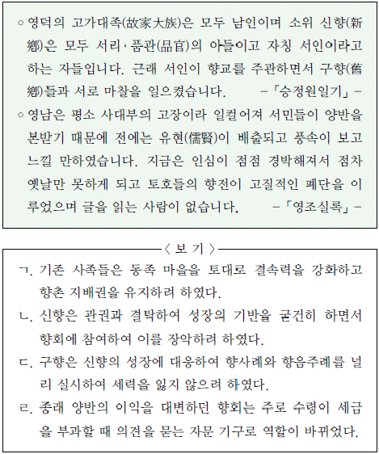
- ㄱ, ㄷ
- ㄱ, ㄹ
- ㄴ, ㄷ
- ㄱ, ㄴ, ㄹ
- ㄴ, ㄷ, ㄹ
(정답률: 35%)
30. 다음 자료와 관련된 설명으로 옳지 않은 것은? [2점]
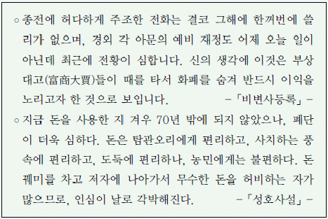
- 전황으로 빈부의 격차가 더욱 심해졌다.
- 동전이 잘 유통되지 않자 정부는 저화를 발행하였다.
- 지주와 대상인들은 화폐를 재산 축적의 수단으로 삼았다.
- 상공업 발전에 따라 화폐가 전국적으로 유통될 수 있었다.
- 농민들은 필요한 동전을 구입하기 위하여 곡물을 헐값으로 팔기도 하였다.
(정답률: 30%)
31. 다음 자료의 서원에 대한 설명으로 옳은 것을＜보기＞에서 고른 것은? [3점]
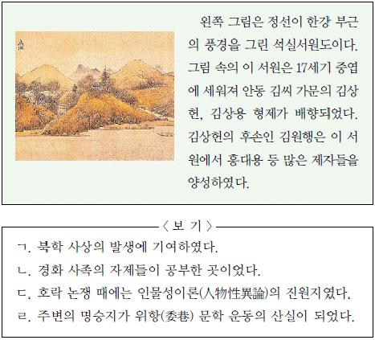
- ㄱ, ㄴ
- ㄱ, ㄷ
- ㄴ, ㄷ
- ㄴ, ㄹ
- ㄷ, ㄹ
(정답률: 27%)
32. 지도와 같이 (가)의 제도가 확대 실시되기까지 오랜 기간이 걸린 이유로 가장 적절한 것은? [1점]
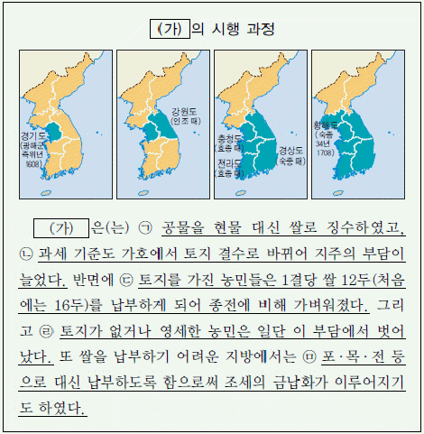
- (ㄱ)
- (ㄴ)
- (ㄷ)
- (ㄹ)
- (ㅁ)
(정답률: 50%)
33. 다음 내용이 서술된 책과 관련된 설명으로 옳은 것은? [1점]
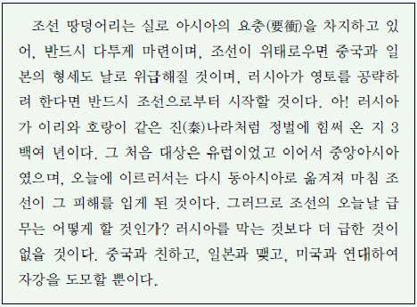
- 제2차 수신사 김홍집이 집필하였다.
- 후쿠자와 유키치의 조언이 담겨 있다.
- 영남 만인소가 올려지는 원인을 제공하였다.
- 조·청 상민 수륙 무역 장정 체결에 영향을 주었다.
- 묄렌도르프가 외교 고문으로 오게 되는 배경이 되었다.
(정답률: 47%)
34. 다음 건축물을 설계한 인물에 대한 설명으로 옳은 것은? [2점]
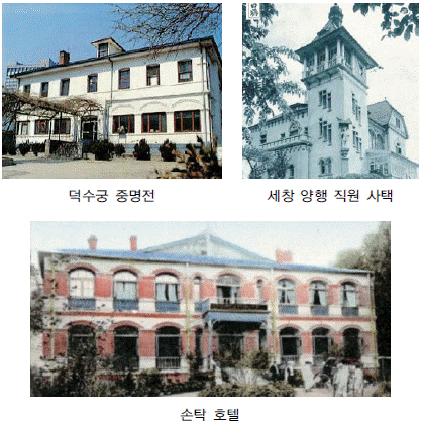
- 대한 매일 신보를 간행하였다.
- 육영 공원의 교사로 활동하였다.
- 최초의 근대식 병원인 광혜원을 운영하였다.
- 최초의 여성 교육 기관인 이화 학당을 세웠다.
- 명성 황후의 시해 현장을 목격하고 그 실상을 증언하였다.
(정답률: 20%)
35. 다음 사절단이 파견된 나라와 관련된 내용으로 옳은 것은? [3점]
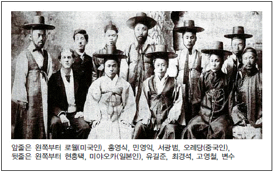
- 삼국 간섭에 참여하였다.
- 절영도 조차를 시도하였다.
- 외규장각 도서를 약탈하였다.
- 거문도를 불법으로 점령하였다.
- 운산 금광 채굴권을 차지하였다.
(정답률: 46%)
36. 다음 자료의 밑줄 그은‘작년의 거사’결과로 체결된 조약의 내용을 <보기>에서 고른 것은? [2점]
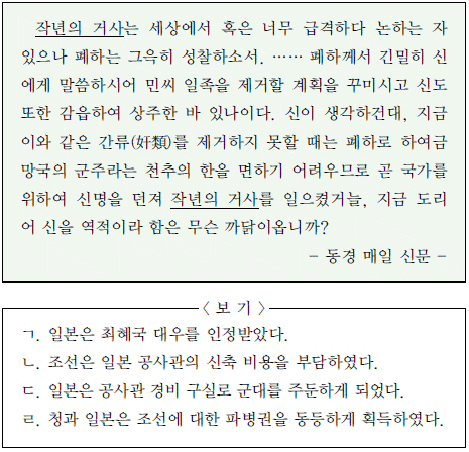
- ㄱ, ㄴ
- ㄱ, ㄹ
- ㄴ, ㄷ
- ㄴ, ㄹ
- ㄷ, ㄹ
(정답률: 29%)
37. (가), (나) 운동에 대한 설명으로 옳은 것을 <보기>에서 고른 것은? [1점]
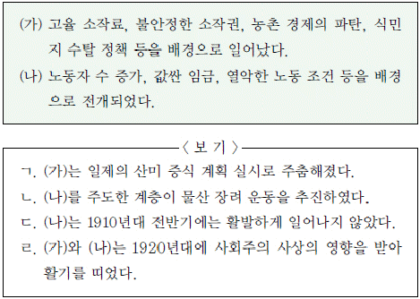
- ㄱ, ㄴ
- ㄱ, ㄷ
- ㄴ, ㄷ
- ㄴ, ㄹ
- ㄷ, ㄹ
(정답률: 36%)
38. (가) 신문의 발간 당시 볼 수 있는 장면으로 적절한 것은? [2점]
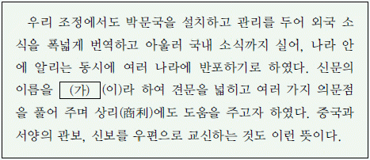
- 교조 신원을 요구하는 동학 교도들
- 단발령 실시에 비분강개하는 유생들
- 통역관이 되고자 동문학에서 공부하는 학생들
- 만민 공동회에 참여하여 연설을 듣는 부녀자들
- 외국 상인들의 철수를 요구하며 시위하는 시전 상인들
(정답률: 25%)
39. 다음 자료의 단체에 대한 설명으로 옳은 것만을 <보기>에서 모두 고른 것은? [2점]
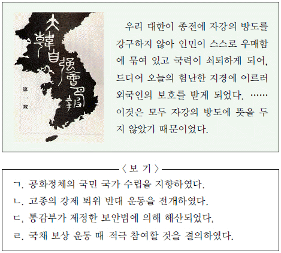
- ㄱ, ㄴ
- ㄱ, ㄷ
- ㄴ, ㄷ
- ㄱ, ㄴ, ㄷ
- ㄴ, ㄷ, ㄹ
(정답률: 21%)
40. 다음 자료의 의병에 대한 설명으로 옳은 것을 <보기>에서 고른 것은? [2점]
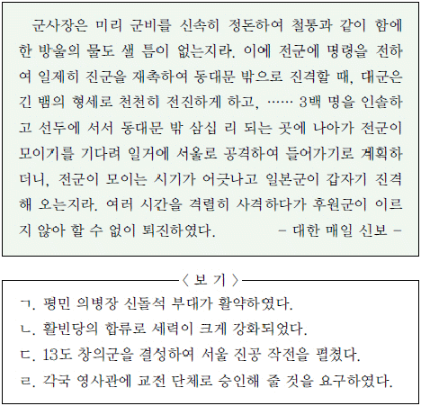
- ㄱ, ㄴ
- ㄱ, ㄷ
- ㄴ, ㄷ
- ㄴ, ㄹ
- ㄷ, ㄹ
(정답률: 43%)
41. (가)~(라)는 일제 강점기의 문학과 예술에 관한 내용이다. 이를 시기 순으로 옳게 배열한 것은? [2점]
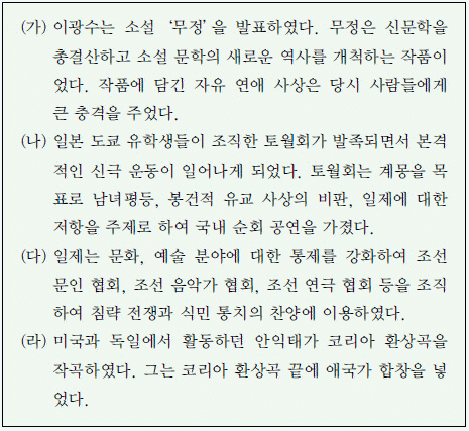
- (가)－(나)－(다)－(라)
- (가)－(나)－(라)－(다)
- (나)－(가)－(다)－(라)
- (나)－(라)－(가)－(다)
- (라)－(가)－(나)－(다)
(정답률: 20%)
42. 다음 글의 밑줄 그은 부분과 관련된 설명으로 옳은 것을 <보기>에서 고른 것은? [2점]
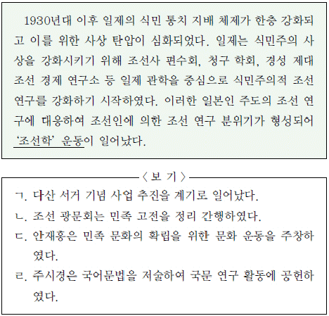
- ㄱ, ㄴ
- ㄱ, ㄷ
- ㄴ, ㄷ
- ㄴ, ㄹ
- ㄷ, ㄹ
(정답률: 19%)
43. 다음 자료와 관련된 시기의 일제 식민 정책으로 옳은 것만을 <보기>에서 모두 고른 것은? [1점]
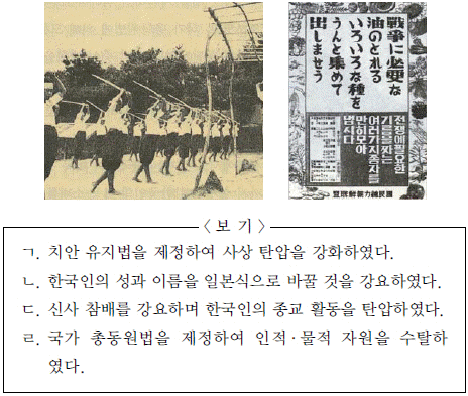
- ㄱ, ㄴ, ㄷ
- ㄱ, ㄴ, ㄹ
- ㄱ, ㄷ, ㄹ
- ㄴ, ㄷ, ㄹ
- ㄱ, ㄴ, ㄷ, ㄹ
(정답률: 51%)
44. (가)~(마)는 일제 강점기의 한국사 연구와 관련된 자료이다. 이 가운데 사관이 나머지 넷과 다른 하나는? [3점]
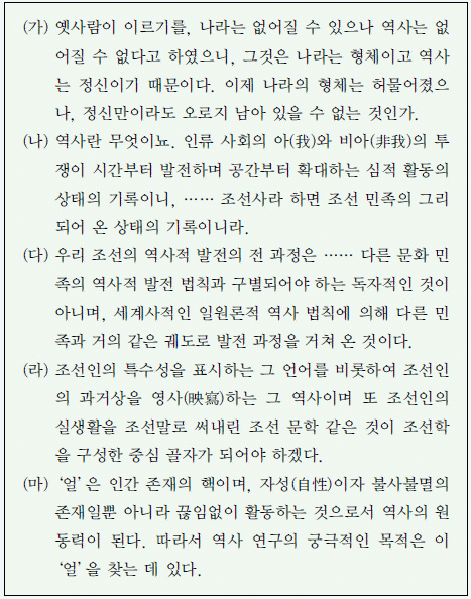
- (가)
- (나)
- (다)
- (라)
- (마)
(정답률: 37%)
45. 연표의 (가)~(마) 시기의 독립운동에 대한 설명으로 옳은 것은? [2점]
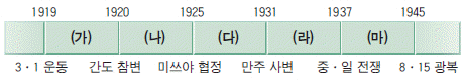
- (가)－대한 광복회는 만주에 무관 학교를 설립하기 위해 군자금을 모았다.
- (나)－조선 의용대는 중국군과 함께 정보 수집, 포로 심문, 후방 교란 등의 활동을 벌였다.
- (다)－한국 광복군은 국내 진공 작전을 위한 군사 훈련을 실시하였다.
- (라)－한국 독립군은 중국군과 연합하여 항일전에서 큰 전과를 거두었다.
- (마)－만주 지역의 여러 독립군 부대는 북로 군정서군의 승리로 주력을 보존할 수 있었다.
(정답률: 43%)
46. (가), (나)에 관한 설명으로 옳지 않은 것은? [2점]
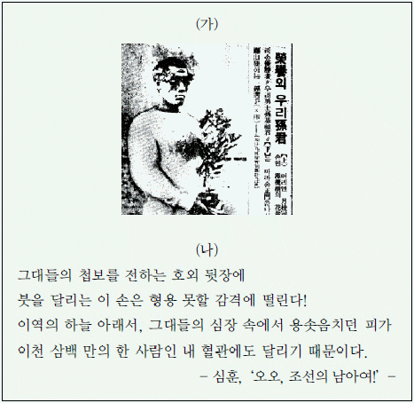
- (가)－베를린 올림픽 마라톤에서 우승한 손기정에 관한 기사이다.
- (가)－일장기 말소 사진을 실은 동아 일보는 무기 정간을 당하였다.
- (가)－손기정의 일장기 말소 사진은 조선 중앙 일보에도 실렸다.
- (나)－손기정, 남승룡의 마라톤 경기 소식에 감격하여 지은 시이다.
- (나)－시인 심훈은 의열단과 민족 혁명당에 가입하여 독립운동을 하였다.
(정답률: 33%)
47. 다음 자료를 통해 추론한 당시 상황으로 적절하지 않은 것은? [1점]
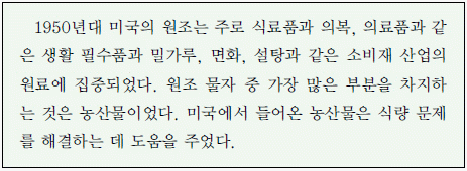
- 농산물 가격이 떨어져 농가 소득이 낮아졌을 것이다.
- 제분·섬유·제당 공업 등이 빠르게 성장하였을 것이다.
- 국내의 밀이나 면화 생산은 커다란 타격을 받았을 것이다.
- 원조 물자 배당 과정에서 정부와 유착된 재벌이 생겨났을 것이다.
- 정부는 밀 소비를 촉진하기 위해 혼식이나 분식을 적극적으로 장려하였을 것이다.
(정답률: 25%)
48. 다음 전광판은 오른쪽‘조건’과 같이 작동한다. 이 전광판에 새겨지는 글자 모양은? [3점]
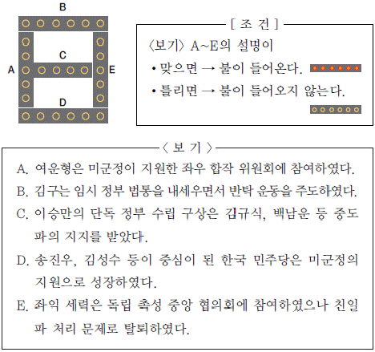
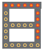
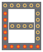
(정답률: 29%)
49. (가)와 (나) 사이에 있었던 사실로 역사 신문을 만들고자 한다. 기사 제목으로 적절하지 않은 것은? [2점]
- 사건 파일：6월 민주 항쟁
- 집중 분석：7·4 남북 공동 성명
- 시민 포럼：와우 아파트 붕괴 사건
- 현장 보고：서울－부산 고속 국도 개통
- 경제 시평：제3차 경제 개발 5개년 계획
(정답률: 42%)
50. 일제 강점기에 전개된 (가)~(라)의 민족 운동에 대한 설명으로 옳지 않은 것은? [3점]
- (가)－부녀자들은 비녀와 가락지까지 내어 모금에 동참하였다.
- (나)－봉건적 굴레로부터의 여성 해방과 일제 침략으로부터의 해방을 목표로 하였다.
- (다)－민족 차별에 반발한 광주 지역 학생들의 시위를 계기로 전국적으로 확산되었다.
- (라)－농촌 계몽 운동의 일환으로 한글 보급을 통한 문맹퇴치 운동을 전개하였다.
- (가)－(나)－(다)－(라)의 순서로 전개되었다.
(정답률: 18%)